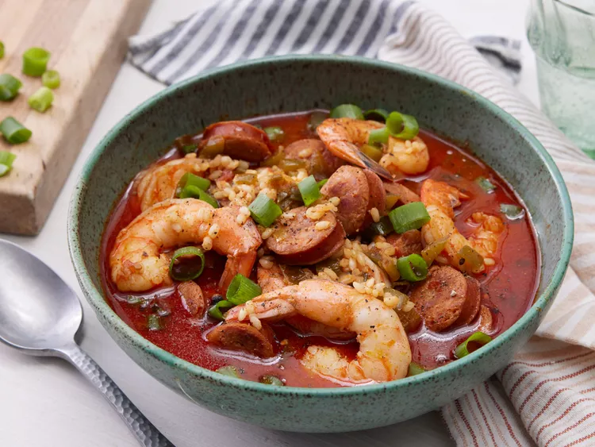

Home
Sausage and Shrimp Jambalaya

Description
While shrimp jambalaya is really more of a thicker rice stew than a soup, it's one of those dishes that can be customized. Add more stock to easily make it into a soup recipe. Serve garnished with green onion.
Ingredients
- 2 tbps butter
- 8 oz andouille sausage, cut into 1/4-inch slices
- 2 tbsp ground paprika
- 1 tbsp ground cumin
- 1/2 tsp cayenne pepper
- 1/2 cup diced tomatoes
- 2 stalks celery, sliced 1/4 inch thick
- 1 large green bell pepper, diced
- 4 green onions, thinly sliced
- 1 tsp salt
- 1 bay leaf
- 1 cup uncooked brown rice
- 3 cups chicken stock
- 1 lb large shrimp, peeled and deveined
- salt and pepper to taste
Directions
- Gather all ingredients
- Place butter and sausage in a large stockpot over medium heat; cook and stir until sausage begins to brown, 5 to 6 minutes.
- Stir in paprika, cumin, and cayenne; cook for 1 minute.
- Stir tomatoes, celery, green pepper, green onions, salt, and bay leaf into the sausage mixture.
- Add brown rice and stir to combine. Stir in chicken stock, bring it to a simmer, then turn heat to low. Cover and cook until rice is just tender, about 45 minutes.
- Stir in shrimp, replace lid and cook until shrimp are cooked through, about 5 minutes. Season with salt and black pepper.